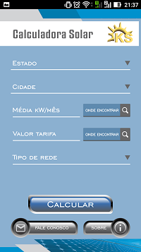
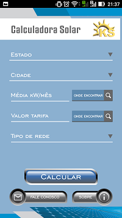

Work History
This are some images about this app:
 

Software Development Engineer
Senior Sistemas | Blumenau, Brazil (Oct 2013 - May 2018)
I worked with an ERP system. My responsibility was integrate our system with government system through web services. I worked with solve client problems and sometimes I had to talk directly with them to understand what was the problem. I also worked with new features of the system, always thinking in improve the system performance and UX. If at Cetil I worked on Town Hall system, now I was working on the other side. I worked in one ERP system, and my module had to provide a WCF service to ERP send the invoices to us and we had to send all the invoices to the city halls and the government. At Senior I worked with .Net, WCF Services, SQL Server, Oracle, Java, Angular, HTML, CSS and JavaScript.
Responsabilities:
Analyze and develop new features for the framework
Support developers using the framework
Keep automated tests and documentation up to date
Lead a team of 4 developers on the development of new features
Independent Software Developer
Benner Sistemas | Blumenau, Brazil (Jan 2013 - Oct 2013)
At Benner, I was hired only to work on an online ticket sales system. I was hired to contribute with the development of a new module to generate invoices when there were sales. When I finished this project, I was called to work at Senior Sistemas. At Benner I worked with .Net, WCF Services, SQL Server, Angular, HTML, CSS, jQuery and JavaScript.
Responsabilities:
Develop a new feature for the system
Keep automated tests and documentation up to date
Junior Software Developer
Cetil Sistemas | Blumenau, Brazil (Jun 2011 - Jan 2013)
In my first opportunity in IT area I was making a course of C# and I was selected with other five students to be hired. It was a great time to me, I learned a lot of things and was a great opportunity to work together with most experienced software developers. I worked in a system for town hall invoices control using .Net technology.
Responsabilities:
Develop new features for the system
Keep automated tests and documentation up to date
Fix and develop new features using native JavaScript and JQuery